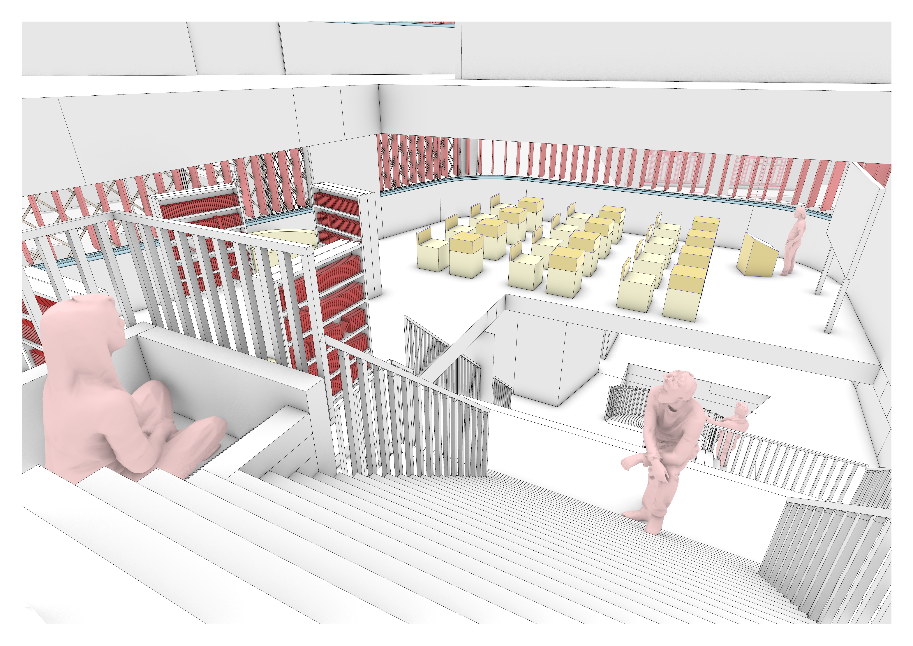

01
Convertible Convergence
NUS Singapore · Design 5
A response to the problematic urban convergences between competing plans — resolved through convertible interiors and a dynamic, permeable façade.
Plans, details, renders →